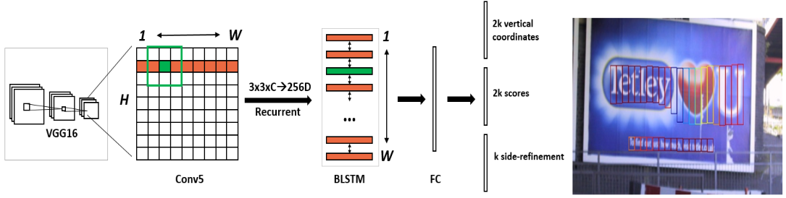
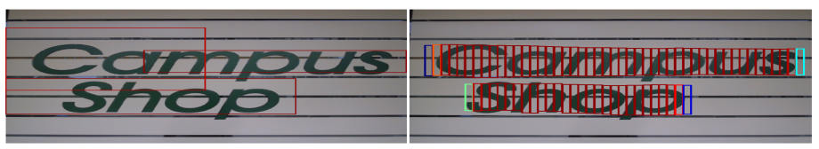
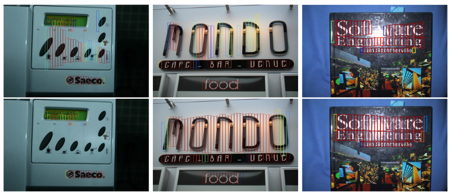
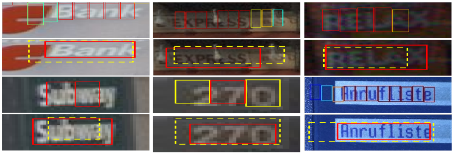

Table of Contents
论文: Detecting Text in Natural Image with Connectionist Text Proposal Network
本文提出了一个新的基于链接的文本区域建议网络(Connectionist Text Proposal Network - CTPN),用于在自然场景图像上准确检测文字区域.CTPN 网络直接在卷积特征图上执行适配过的建议框检测.建议框为固定宽度,可变高度.并且建议框检测和文本/非本文得分同时预测,从而提高定位准确性.序列的建议框和循环神经网络直接联结,从而实现端到端模型.和以前的自下而上(bottom-up)的方法比,无需一些后处理就可以很好的在多尺度和多语言文本上实现很好的检测效果.在 ICDAR 2013 和 2015 数据集上能够获得 0.88 和 0.61 的 F 得分.并且 CTPN 在使用 VGG16 作为卷积网络的时候,能够获得 0.14s/image 的计算效率.
Introduction
自然图像上的文字识别近年来在很多领域都有使用场景,例如图像 OCR,多语言翻译,图像检索等.一般文字识别包含两个子任务:文本区域检测和文字识别.文本工作主要是文字区域检测.
当前的主要文本区域检测方法都是自下而上的流程.一般是从低界别的字符或者笔划检测开始,随后执行一些后续处理方法:非文本模块过滤,文本行构建和文本行识别.这种多步自下而上的方法涉及太多复杂操作,使得检测方法整体不是非常的健壮和可靠.整体算法效果非常依赖字符检测结果和字符连接方法或者滑窗(sliding-window)方法的效果.而且这些方法依赖低层特征(例如:SWT1, 2,MSER3, 4, 5,或者 HoG6)将候选文本筛选出来.然而,这些方法无法在没有上下文信息的情况下有效的识别单个笔画和字符.例如:对于人类来说识别一系列字符要比识别一个单独的字符,尤其是字符具有一定的歧义性.这些限制会在字符检测阶段就引入很多非文本元素,为后续的处理带来了很多困难.并且这些错误检测很容易在自下而上的处理方法中累积.为了克服这些问题,本文提出了利用卷积网络生成的特征来检测文本.提出了适用文本检测的检测锚机制来准确预测文本区域.随后,集成循环神经网络将这些文本建议区域连接在一起,从而利用丰富的上下文信息来识别文本区域.
深度卷积神经网路(CNN)在目标识别领域带来了非常大的提升.最好的目标检测算法是 Faster Region-CNN(R-CNN)7,其中区域建议网络(Region Proposal Network-RPN)用来根据卷积神经网络的特征图生成高质量的,类别目标建议区域.然后将这些建议区域喂给 Fast R-CNN 模型,作更进一步的细分类和边框回归,从而实现了在一般目标检测场景下的最好效果.这种一般的目标检测算法,无法直接在文本区域检测场景下直接使用,因为文本区域检测常常需要更高的检测精度.目标检测中,一般正确的检测定义情况较为宽松,例如目标区域和检测区域的 IoU>0.5 就认为是正确检测.相应的,文本识别和理解是个更为精细(fine-grained)的识别过程,需要文本检测能够正确的检测出整个文本行或者单词才行.因此,文本区域检测一般要求更为精准的定位,需要不同的评估标准,例如 Wolf 标准8,在很多的文本检测数据集中使用.
本文主要通过扩展 RPN 结构,从而实现本文的精准定位.并且随后通过在网络中集成一个循环神经网络,使得网络可以利用卷积神经网络生成的特征图信息直接实现文本序列检测,从而避免后续再次使用卷积神经网络实现后处理工作.
Contributions
本文提出了一个新的方法,连续文本建议网络(Connectionist Text Proposal Network - CTPN),直接在卷积层定位文本序列.本方法克服了自下而上的方法很多限制.直接利用深度卷积网络学习到的特征优点,整体 CTPN 网络结构如图-1所示,主要贡献如下:
第一,将文本检测问题等价于定位序列文本建议区域.提出了基于锚回归的机制,针对文本建议区域同时预测垂直区域范围和分类得分,可以实现非常准确的定位.这一点和原始的 RPN 具有非常的不同.
第二,在网络结构中嵌入一个循环机制,用来将卷积特征图中的本文建议区域连接起来.从而可以使得检测算法能够利用整行本文信息来进行定位.
第三,两部门无缝对接在一起,从而实现整体端到端的训练模型.本文提出的模型可以在一个流程中很好的应对多尺度和多种语言的本文定位,而且不需要额外的后处理和调整.
第四,本文提出的模型在很多测试集上都达到了最好的效果(例如: 在 ICDAR2013 上 0.88 F 得分,ICDAR 2015 上 0.61 得分).并且整个模型的计算效率非常高,0.14s/image.
Related Work
Text detection. 在自然场景下文本检测模型,过去的工作大多数采用自下而上的方法,从字符或者笔画检测开始.可以主要分为两种大类:基于元素链接的方法(Conneted-Componenets)和基于滑窗方法(Sliding-Window).元素链接方法采用一个速度极快的过滤器判断像素是否是文本,然后利用低层特征(对比度,颜色,梯度等)1, 2, 3, 9将这些文本元素组合成候选的笔画或者字符.滑窗方法通过将多尺度窗口在输入图像上滑动来检测文本候选区域,利用手动设计的特征6, 10或者卷积特征11来训练一个预训练的分类器区分窗口中是否包含文字.然而,两种组合方法都会因为文本检测性能,在后续的处理中累加错误.并且使用局部信息来检测和过滤字符是不合理的.
Object detection. 卷积神经网络最近在目标识别中表现非常好.一般的目标检测策略是现通过简单的低层特征快速的选出候选目标建议区域,然后采用卷积神经分类器来进行分类和定位调整.选择性搜索(Selective Search - SS)常常用来生成一般目标建议区域.本文和一般目标有很大的不一样,所以无法直接使用一般的目标识别算法来处理文本检测任务.
Connectionist Text Proposal Network
本部分详细说明 CTPN 网络的结构细节.三个关键贡献: 小尺度的文本检测建议,循环链接文本建议区域,边框调整(side-refinement).

Figure 1: (a) CTPN 网络结构.主要是在 VGG16 网络的最后一层卷积层(conv5)执行一个 3*3 空间窗口滑动.每一行的序列窗口采用循环神经网络(Bi-directional LSTM)进行链接,每个滑动窗口的卷积特征(3*3*C)作为 256D BLSTM)(双向 128DLSTM)的输入.然后循环神经网络连接着 512D 的全链接层,最后连接着输出层,用来预测 k 个建议区域的文本分类得分,y 轴的坐标和边框调整偏移.(b) CTPN 输出的固定宽度的小尺度文本建议区域.颜色预示文本分类得分.只有为文本的边框才显示出来.
Detecting Text in Fine-scale Proposals
类似于区域建议网络(Region Proposal Network - RPN),CTPN 本质上讲也是一个全卷积神经网络,允许输入的图像具有任意尺寸.通过在卷积层输出的特征图上移动一个小的滑动窗口来检测文本行,然后输出对应的小尺度文本(固定宽度为 16 像素)建议区域,如图-1(b)所示.
本文采用了非常深的 VGG16 作为卷积特征提取网络.整个 CTPN 的网络结构如图-1(a)所示.采用了一个小的空间窗口,3*3,在最后一层卷积层(例如:vgg 的 conv5 层)上进行滑动.conv5 特征图的大小由输入图像决定,但是总的步长和感受野为 16 和 228 个像素.这里虽然也采用了滑动窗口,但是是在特征图上采用,可以很大的减少运算量.
一般滑动窗口的方法会结合多尺度窗口来检测不同大小的目标.Ren et al7提出了一个非常有效的锚回归机制,从而允许 RPN 在一个尺度窗口上检测多个尺度目标对象.主要的思想是,采用多个固定尺度的锚边框,就可以在一个单独的窗口上预测出多尺度和不同长宽比例的目标.本文通过对这种基于锚边框检测机制进行扩展,从而实现文本检测.但是文本检测和一般目标检测具有较大的差异,文本序列并没有一个比较明显的边框,并且包括多种级别的目标元素,例如笔画,字符,词,文本行或者文本区域,并且这些目标元素并没有明显的差异.文本检测定义为词和文本行检测,如果将文本行或者词当成一个整体目标进行检测,很容易出现错误.图-2显示了 RPN 网络直接用来训练和定位文本行的效果.

Figure 2: 左图: RPN 网络检测.右图: 小尺度文本检测.
由于文本行中的文字目标其实是隔离和独立的,所以 RPN 网络较难准确的预估出文本行水平边界.很自然的可以认为文本行是由一系列的小吃度文本建议区域组成的,每个建议区域为文本的一小部分,例如,16 个像素固定宽度的文本片段.每个提议区域可能包含一个或者多个笔画,字符的一部分,一个字符或者多个字符.这样可以固定难以预测的水平尺度,只需要预测比较准确的垂直尺度.对比与 RPN 网络预测一个目标的 4 个坐标,该方案降低了问题的难度.从而提出固定锚建议边框的宽度,然后预测本文/非文本分类和 y 轴定位的锚建议区域机制.
最后,本文提出了一个小尺度文本建议区域模型.检测器在 conv5 的每一个空间位置进行锚建议区域检测.每个文本建议区域具有 16 像素的固定宽度.并且 conv5 的特征图总步长为 16 像素.然后设计 K 个垂直建议区域去预测每个建议区域的 y 轴偏移.k 个锚建议区域具有相同的水平位置,并且具有固定的 16 像素宽度,但是垂直方向具有 k 个不同的高度.本文实验中,采用 k=10 个锚建议边框,高度从 11 像素 到 273 像素(处以 0.7 每次)递增.实际的垂直坐标通过相对于建议区域的高度比例和 y 轴中心点偏移比例来定位.相对的预测垂直坐标(v)和建议边框的关系如下:
\begin{equation} \mathcal{v}_{c}=(c_{y}-c_{y}^{a})/h^{a},\ \ \mathcal{v}_{h}=\log{(h/h^{a})} \end{equation} \begin{equation} \mathcal{v}_{c}^{*}=(c_{y}^{*}-c_{y}^{a})/h^{a},\ \ \mathcal{v}^{*}=\log{(h^{*}/h^{a})} \end{equation}\(\mathcal{v}={v_{c}, v_{h}}\),\(\mathcal{v}^{*}={v_{c}^{*},v_{h}^{*}}\) 为预测边框和真实边框对于建议边框的相对坐标. \(c_{y }^{a}\) 和 \(h_{a}\) 为建议边框的中心点(y 轴)和高度; \(c_{y}\) 和 \(h\) 为预测的 y 轴中心点坐标和边框高度; \(c_{y}^{*}\) 和 \(h^{*}\) 为真实边框的 y 轴中心点坐标和高度.那么每个预测的边框大小为 [h,16],如图-1(b)和图-2(右)所示.
检测过程如下.输入图像经过 VGG16 计算后得到 H*W*C 的卷积层 5 的特征图,其中 C 为特征图的个数,W*H 为特征图空间尺度.然后检测器在卷积层 5 上执行 3*3 滑窗检测,输入为 3*3*C 的卷积特征.每个预测,水平位置(x 轴)和 k 个锚检测区域位置固定.检测器输出对应的边框的文本得分和 k 个锚边框的 y 轴相对坐标(v).检测出的文本建议区域由文本得分大于 0.7 的锚区域经过非极大值抑制后得到.
Recurrent Connectionist Text Proposals
为了提高定位精度,将文本行分割成了一系列的小尺度文本区域,然后分别预测.显然,分别独立考虑单个的建议检测区域是不合理的.会使得大量的假真样本的出现,一旦局部图像类似文字就会被检测成文字区区域,如图-3(上)所示.文本具有很强的序列特征可以用来进行可靠的检测.最近的工作12证明循环神经网络可以很好将这些上下文信息编码从而实现文本识别.

Figure 3: (上) 没有集成 RNN 的 CTPN.(下)集成 RNN 的 CTPN.
循环神经网络可以通过内部隐藏状态多个连续的文字建议区域信息记录下来,然后在预测的时候可以参考左右链接的建议区域的信息同时做出预测,从而提高预测性能.本文在卷积层 conv5 后链接循环层,以 conv5 层的 3*3 滑动窗口的特征向量作为输入,然后根据如下公式更新内部循环状态 \(H_{t}\):
\begin{equation} H_{t} = \varphi (H_{t-1}, X_{t}),\ \ \ t=1,2,...,W \end{equation}\(X_{t} \in R^{3*3*C}\) 为在卷积层 conv5 的第 t 个 3*3 滑动窗口特征向量.滑动窗口从左向右滑动, \(t=1,2,...,W\).\(W\) 为 conv5 卷积层的宽度.\(H_{t}\) 为循环层内部的隐含状态,由当前输入(Xt)和前一刻隐含状态(Ht-1)联合计算.\(\varphi\) 为循环层用的非线性函数.本文采用的是长短时记忆网络(long short-term memory (LSTM))作为循环层13,并且采用双向 LSTM 进行上下文信息编码,使得任意一个位置都可以包含正行卷积特征信息.
内部状态 \(H_{t}\) 随后跟着一个全链接层进行变换,最后输出层用来计算第 t 个建议的预测结果.增加 RNN 层,对向量的上下文滑动窗口内的信息进行编码,从而实现更为精准的预测,结果如图-3所示.可以看到减少了假真,并且检测出了很多不是很明显的文本区域.
Side-refinement
在检测出小尺度本文建议区域后,可以直接将文本的分大于 0.7 的连续相邻文本建议区域链接起来.文本行构建如下:首先,对于一个本文建议区域 \(B_{i}\) 定义成对相邻建议区域(Bj)为 \(B_{j}->B_{i}\),满足(i) \(B_{j}\) 为水平方向和 \(B_{i}\) 最近;(ii) 这个距离小于 50 像素;(iii)他们的垂直区域重合 0.7.其次,如果两个文本建议区域满足 \(B_{j}->B_{i},B_{i}->B_{j}\),那么这一对建议区域组成一对.本文行通过上述过程迭代执行构成.
上述的小尺度建议检测和 RNN 上下文信息编码机制能够很准确在垂直方向上定位文本区域.在水平方向,图像被分成序列的 16 像素等宽的建议区域,当真实标记区域没有很好的在水平方向上标记文本区域会带来不精准的检测,如图-4所示.这种不精准的定位在一般物体检测场景中没有问题,但是在文本识别是不可接受的.

Figure 4: CTPN 检测结果,红色框包含边微调和黄色虚线不包含边微调的结果.
为了克服上述问题,本文提出了一个边微调(side-refinement)的方法,用来精准的预估每个建议区域左右水平边的偏移.类似 y-轴坐标预测,相对偏移定义:
\begin{equation} o=(x_{side}-c_{x}^{a})/w^{a},\ \ o^{*}=(x_{side}^{*}-c_{x}^{a})/w^{a} \end{equation}\(x_{side}\) 为预估的 x-轴相对于当前锚建议区域的最近水平边(左边或者右边). \(x_{side}^{*}\) 为真实标记(ground truth)的 x-轴坐标.\(c_{x}^{a}\) 为当前锚建议区域的 x-轴中心坐标.\(w^{a}\) 为锚建议区域宽,固定为 16.边微调只在本文行的开始和结束的预测建议区域使用.
Model Outputs and Loss Functions
CTPN 模型最后有 3 个输出,如图-1(a)所示.三个输出同时预测文本得分(s),垂直坐标(\(v={v_{c},v_{h}}\))和边微调偏移(o).采用 k 个锚建议区域在 conv5 的每个空间位置预测实际的文本区域,所以输出是 2k,2k,k 个结果.
本文采用多任务学习,同时优化整个模型参数.总共有三个损失函数,\(L_{s}^{cl},L_{v}^{re},L_{o}^{re}\),分别对应文本得分损失,垂直坐标损失和边微调损失.总损失函数为:
\begin{equation} L(s_{i},v_{j},o_{k})=\frac{1}{N_{s}}\sum_{i}L_{s}^{cl}(s_{i},s_{i}^{*})+\frac{\lambda_{1}}{N_{v}}\sum_{j}L_{v}^{re}(v_{j},v_{j}^{*})+\frac{\lambda_{2}}{N_{o}}\sum_{k}L_{o}^{re}(o_{k},o_{k}^{*}) \end{equation}每个锚建议区域都是一个训练样本,i 为锚建议区域的下标. \(S_{i}\) 为锚建议区域 i 的文本得分预估概率. \(S_{i}^{*} = {0,1}\), 为真实标记(ground truth).j 为参与 y-轴坐标回归的有效锚建议区域对应的下标.有效的锚建议区域定义:有效的锚建议区域为正锚建议区域(\(s_{j}^{*}=1\)),或者和真实本文区域的交叉面积(Intersection-over-Union (IoU))大于 0.5. \(v_{j}\) 和 \(v_{j}^{*}\) j 的锚文本区域的预测和真实的 y 轴坐标.k 为做边微调的锚建议区域坐标,定义为与真实文本行左右边界的距离在 32 像素以内的锚建议区域.\(o_{k}\) 和 \(o_{k}^{*}\) 为在 x-轴上预测和真实的边界偏差. \(L_{s}^{cl}\) 为文本分类损失,采用 softmax 作为损失函数.\(L_{v}^{re}\) 和 \(L_{o}^{re}\) 为回归损失,采用平滑 L1 损失函数. \(\lambda_{1}\) 和 \(\lambda_{2}\) 为损失系数来平衡各种任务,经验值设置为 1.0 和 2.0.
Training and Implementation Details
CTPN 采用标准反向传播算法和随机梯度下降直接可以实现端到端的训练.类似与 RPN,训练的样本是锚建议区域,在根据输入图像和标记的文本区域预计算.
Training labels. 对于文本分类,一个二分类标签赋给每一个锚建议区域.通过计算锚建议区域和真实区域之间的 IoU.正标记定义为:(i)锚建议区域和真实区域的 IoU>0.7;(ii)和真实区域具有最大 IoU 的锚建议区域.条件(ii)保证即使很小的文本区域也具有一个正的锚建议区域.从而使得 CTPN 可以检测非常小的文本区域.IoU<0.5 的锚文本建议区域定义为负样本.
Training data. 在训练过程中,每个批量样本是随机从一个输入图像生成的.每一个批次的样本大小固定为 Ns=128,正负样本比例为 1:1. 如果输入图像的正锚建议区域少于 64 个,那么用负样本补充.模型在 3000 个图像集上进行训练,包括 229 张 ICDAR 2013 的训练样本.所有样本将最小分辨率缩放到 600.
Implementation Details. 卷积网络采用在 ImageNet 上预训练的 VGG16 模型.新增网络层采用均值为 0,标准方差为 0.01 的高斯分布随机初始化.前两层卷积层权值不参与训练.动能系数设置为 0.9,采用 0.005 权值衰减.学习率在最开始的 16K 此迭代设置为 0.001,随后的 4K 训练中学习率设置为 0.0001.
Footnotes:
Epshtein, B., Ofek, E., Wexler, Y.: Detecting text in natural scenes with stroke width transform (2010), in IEEE Computer Vision and Pattern Recognition (CVPR)
Huang, W., Lin, Z., Yang, J., Wang, J.: Text localization in natural images using stroke feature transform and text covariance descriptors (2013), in IEEE International Conference on Computer Vision (ICCV)
Huang, W., Qiao, Y., Tang, X.: Robust scene text detection with convolutional neural networks induced mser trees (2014), in European Conference on Computer Vision (ECCV)
Neumann, L., Matas, J.: Real-time lexicon-free scene text localization and recognition. In IEEE Trans. Pattern Analysis and Machine Intelligence (TPAMI) (2015)
Zhang, Z., Shen, W., Yao, C., Bai, X.: Symmetry-based text line detection in natural scenes (2015), in IEEE Computer Vision and Pattern Recognition (CVPR)
Tian, S., Pan, Y., Huang, C., Lu, S., Yu, K., Tan, C.L.: Text flow: A unified text detection system in natural scene images (2015), in IEEE International Conference on Computer Vision (ICCV)
Ren, S., He, K., Girshick, R., Sun, J.: Faster R-CNN: Towards real-time object detection with region proposal networks (2015), in Neural Information Processing Systems (NIPS)
Wolf, C., Jolion, J.: Object count / area graphs for the evaluation of object detection and segmentation algorithms. International Journal of Document Analysis 8, 280–296 (2006)
Yin, X.C., Pei, W.Y., Zhang, J., Hao, H.W.: Multi-orientation scene text detection with adaptive clustering. IEEE Trans. Pattern Analysis and Machine Intelligence (TPAMI) 37, 1930–1937 (2015)
Wang, K., Babenko, B., Belongie, S.: End-to-end scene text recognition (2011), in IEEE International Conference on Computer Vision (ICCV)
Jaderberg, M., Vedaldi, A., Zisserman, A.: Deep features for text spotting (2014), in European Conference on Computer Vision (ECCV)
He, P., Huang, W., Qiao, Y., Loy, C.C., Tang, X.: Reading scene text in deep convolutional sequences (2016), in The 30th AAAI Conference on Artificial Intelligence (AAAI-16)
Hochreiter, S., Schmidhuber, J.: Long short-term memory. Neural Networks 9(8), 1735–1780 (1997)